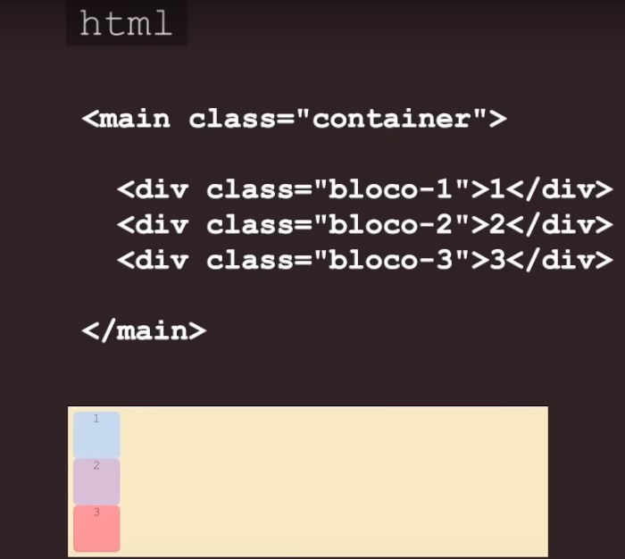
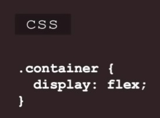
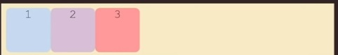
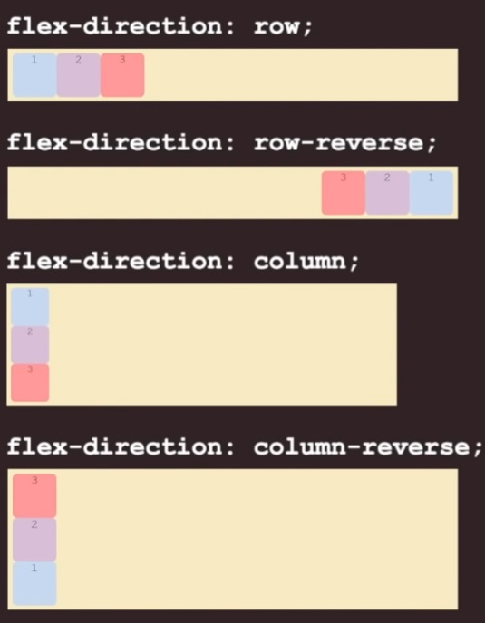
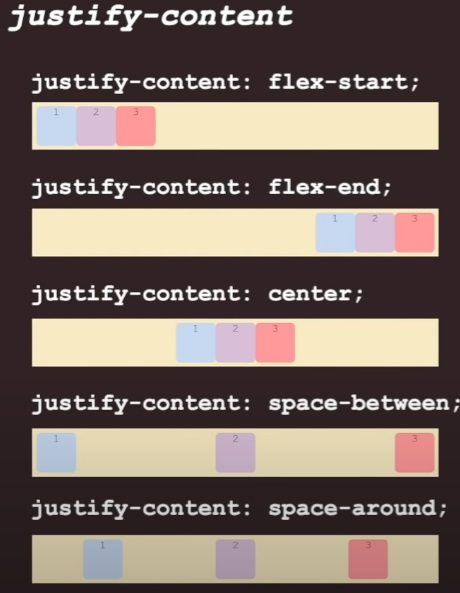
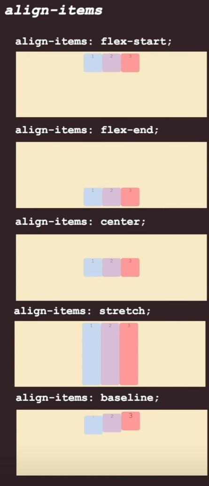
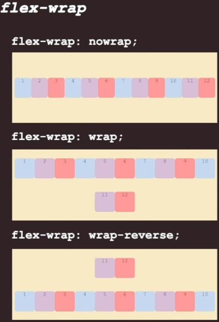
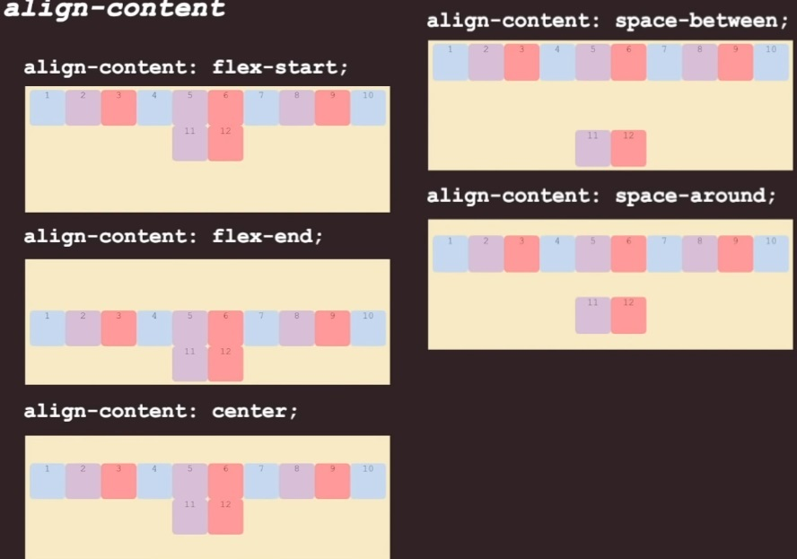

Aprendendo FlexBox
- FlexBox, traduzido literalmente, significa Caixa Flexível.
-
É usado para alinhar dinamicamente elementos dentro de um
".container".
-
O container é um elemento pai, como uma "div" ou "ul". Ele define
o contexto de layout para os elementos filhos.
-
O Flexbox oferece um conjunto de propriedades que permitem
controlar o layout, o alinhamento e a distribuição dos itens
dentro do container.
-
Alguns exemplos de propriedades do Flexbox incluem
display: flex para definir um container como
flexível, justify-content para alinhar itens ao
longo do eixo principal, e align-items para
alinhar itens ao longo do eixo transversal.
-
Os elementos filhos dentro do container flexível são chamados de
"itens flexíveis". Eles podem ter seu próprio tamanho, ordem e
alinhamento, independentemente dos outros itens.
Confira o exemplo a seguir:

Ao utilizar "display: flex" na
"main" com a classe "container",
os itens dentro dela serão dispostos horizontalmente por padrão, com
o eixo principal seguindo essa direção. O eixo secundário, por sua
vez, permanece vertical, como padrão.


Propriedade flex-direction:
A propriedade CSS flex-direction define a direção principal em que
os itens flexíveis são posicionados dentro de um container flexível.
Ela determina se os itens são dispostos horizontalmente ou
verticalmente, assim como a ordem em que aparecem no layout. Existem
quatro valores principais para flex-direction:

-
row: Os itens são dispostos da esquerda para a direita na direção
do eixo principal, com o início à esquerda e o final à direita.
-
row-reverse: Similar a row, mas os itens são dispostos da direita
para a esquerda, com o início à direita e o final à esquerda.
-
column: Os itens são dispostos de cima para baixo na direção do
eixo principal, com o início no topo e o final na parte inferior.
-
column-reverse: Similar a column, mas os itens são dispostos de
baixo para cima, com o início na parte inferior e o final no topo.
Por padrão, quando a propriedade flex-direction não é
especificada, o valor assumido é row. Isso
significa que os itens flexíveis são dispostos da esquerda para a
direita na direção do eixo principal, com o início à esquerda e o
final à direita dentro do container flexível.
O valor "row" é o que utilizaremos no decorrer da matéria.
Propriedade justify-content:
A propriedade CSS justify-content é utilizada em
containers flexíveis para controlar o alinhamento dos itens
flexíveis ao longo do eixo principal. Ela determina como o espaço
disponível é distribuído entre os itens flexíveis quando há espaço
sobrando no container. Existem vários valores possíveis para
justify-content, cada um com um efeito distinto no
layout:

-
flex-start: Alinha os itens no início do container ao longo do
eixo principal.
-
flex-end: Alinha os itens no final do container ao longo do eixo
principal.
-
center: Centraliza os itens ao longo do eixo principal dentro do
container.
-
space-between: Distribui os itens igualmente ao longo do eixo
principal, com espaços iguais entre eles e nas extremidades.
-
space-around: Distribui os itens igualmente ao longo do eixo
principal, com espaços iguais ao redor deles.
Por padrão, quando a propriedade justify-content não é
especificada, o valor assumido é flex-start, o que
significa que os itens são alinhados no início do container ao longo
do eixo principal. No entanto, ao longo do curso, utilizaremos
o valor center, que centraliza os
itens ao longo do eixo principal dentro do container flexível. Isso
proporciona um layout mais equilibrado e esteticamente agradável.
Também adicionaremos 500px de altura pro nosso container.
Propriedade align-items:
A propriedade CSS align-items é utilizada em containers flexíveis para controlar o alinhamento dos itens flexíveis ao longo do eixo transversal. Ela determina como os itens são posicionados verticalmente dentro do container flexível. Existem vários valores possíveis para align-items, cada um com um efeito específico no layout:

- flex-start: Os itens são alinhados no início do container ao longo do eixo transversal.
- flex-end: Os itens são alinhados no final do container ao longo do eixo transversal.
- center: Os itens são centralizados verticalmente dentro do container ao longo do eixo transversal.
- stretch: Os itens são esticados para preencher todo o tamanho do container no eixo transversal.
- baseline: Os itens são alinhados com base na linha de base de seu conteúdo, se houver, dentro do container.
Propriedade flex-wrap
A propriedade CSS flex-wrap é utilizada em containers flexíveis para controlar o comportamento de quebra de linha dos itens flexíveis quando não há espaço suficiente no container para todos os itens ocuparem uma única linha. Ela determina se os itens devem ser dispostos em uma única linha (o valor padrão) ou se podem ser quebrados em linhas múltiplas. Existem três valores possíveis para flex-wrap:

- nowrap: Os itens são forçados a permanecerem em uma única linha, mesmo que isso cause transbordamento do container.
- wrap: Os itens são dispostos em várias linhas, se necessário, para que todos se ajustem dentro do container.
- wrap-reverse: Os itens são dispostos em várias linhas, começando da última linha até a primeira.
Propriedade flex-flow
A propriedade CSS flex-flow é uma abreviação conveniente que combina as propriedades flex-direction e flex-wrap em uma única declaração. Isso permite definir a direção de layout dos itens flexíveis ao longo do eixo principal e controlar se os itens podem ser quebrados em múltiplas linhas, tudo em uma única linha de código.
A sintaxe geral da propriedade flex-flow é:
flex-flow: <flex-direction> <flex-wrap>;
No estudo usaremos:
flex-flow: row wrap;
Propriedade align-content
A propriedade CSS align-content é utilizada em containers flexíveis de múltiplas linhas para controlar o alinhamento dos itens flexíveis ao longo do eixo transversal, quando há espaço extra disponível no container. Lembrando que essa propriedade só se torna ativa se utilizarmos flex-wrap: wrap;

- flex-start: Alinha as linhas de itens no início do container.
- flex-end: Alinha as linhas de itens no final do container.
- center: Centraliza as linhas de itens verticalmente no container.
- space-between: Distribui o espaço restante de forma uniforme entre as linhas de itens, com espaços iguais entre elas e nas extremidades.
- space-around: Distribui o espaço restante de forma uniforme entre as linhas de itens, com espaços iguais ao redor delas.
- stretch: Estica as linhas de itens para preencher todo o espaço disponível no eixo transversal.